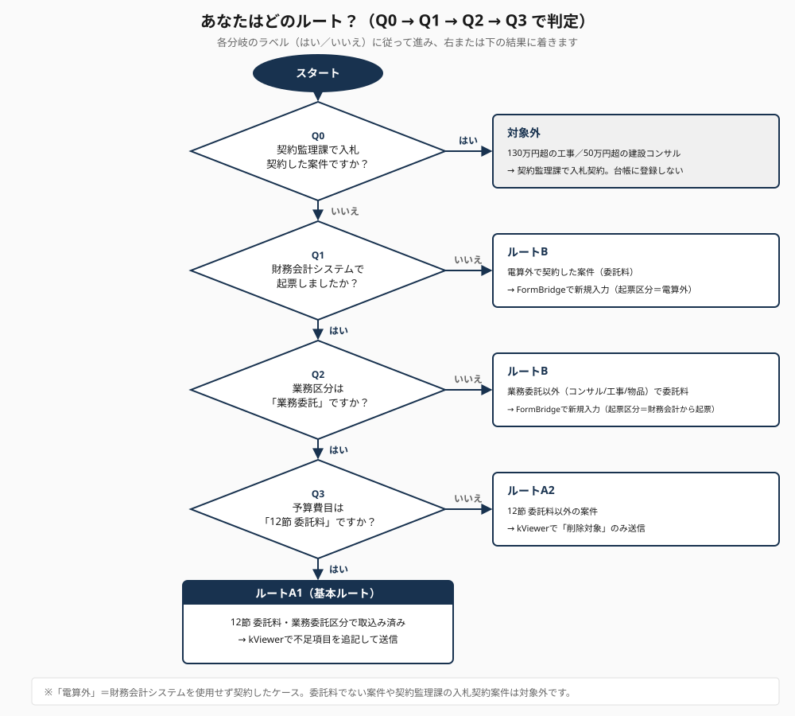

業務委託契約実績台帳 入力マニュアル
業務委託契約実績台帳 Ver2.0｜登録・確認・送信まで迷わず進める実務手順書
まずここから：自分はどの章を読む？
初めての方は、まず「入力ルートの判定」で自分のルートを確認してから、該当する章へ進んでください。
本台帳の目的
業務委託契約実績台帳は、大分市の業務委託契約を一元的に把握し、契約事務の確認・公表・照会対応に使う基礎データです。
| 目的 | 内容 |
|---|---|
| 1 入札監視委員会の案件抽出 | 入札監視委員会で審議する業務委託契約の抽出資料として使います。 |
| 2 照会対応 | 契約内容、契約方法、金額、契約相手方などの照会に対応するための基礎情報として使います。 |
| 3 契約事務の改善検討 | 契約状況を整理し、契約事務の改善や庁内確認に使います。 |
| 4 随意契約のホームページ公表の案件抽出 | 業務委託契約に係る随意契約のホームページ公表対象案件を、この台帳から抽出します。 |
まず開くURL一覧
入力作業で使う入口は2つです。自分の案件がどのルートかを判定してから、該当するURLを開いてください。
FormBridge 入力フォーム
新規に全項目を入力するフォームです。ルートB/Cで使います。kViewerの編集ボタンから開く場合も、実際の入力・送信画面はFormBridgeです。
https://oitacity.form.kintoneapp.com/public/outsourcing-ver2kViewer 閲覧・編集用ビュー
財務会計システムから取込まれた既存案件を探し、該当レコードの編集に進むための画面です。ルートA1で使います。
https://oitacity.viewer.kintoneapp.com/public/outsourcing-ver2-listview入力前に準備する資料
入力する際は、手元に資料をそろえてから入力してください。
| 資料 | 確認する主な項目 | 必要になる場面 |
|---|---|---|
| 契約書・契約書案 | 件名、契約相手方、契約日、履行期間、契約金額、電子契約、スライド条項など | 全ルート |
| 起案文書・施行伺 | 担当課、業務区分、予算費目、積算方法、予定価格、契約種別、予定価格の設定方法 | 全ルート |
| 入札・見積結果が分かる資料 | 入札種別、入札日、参加業者数、辞退・欠席・無効・くじ引きの有無、障害者雇用促進企業指名業者名、電子入札 | 入札・見積合わせ案件 |
| 随意契約理由書 | 適用号、随意契約理由、相手方選定理由 | 随意契約案件 |
| 公告文PDF | 公告文ファイル、ファイル名、添付後の表示 | 一般競争入札案件 |
| 契約解除関係資料 | 契約解除日、契約解除根拠、契約解除理由 | 契約解除がある案件 |
入力ルートの判定
次の3問を確認して、ルートを判定してください。まずは下の図でYes/Noをたどると、自分のルート（A1／A2／B／C）が分かります。

| 順番 | 確認すること | 確認場所 |
|---|---|---|
| Q1 | 施行伺を財務会計システムで起票しましたか。 | 施行伺、起案文書、財務会計システム |
| Q2 | 業務区分は「業務委託」ですか。 | 財務会計システムの業務区分欄 |
| Q3 | 予算費目は「12節 委託料」ですか。 | 起案文書、予算費目欄、kViewerの予算費目欄 |
| 判定結果 | 使う画面 | やること |
|---|---|---|
| 予算費目が「12節 委託料」で施行伺を財務会計システムで起票し、施行伺の業務区分が「業務委託」で契約した案件 | ルートA1 kViewer | 既存案件を検索し、編集ボタンから不足項目を入力して送信します。 |
| 予算費目が「12節 委託料以外」で施行伺を財務会計システムで起票し、施行伺の業務区分が「業務委託」で契約した案件 | ルートA2 kViewer | 追加入力せず、「削除対象」にチェックして送信します。削除理由は不要です。 |
| 予算費目が「12節 委託料」で施行伺を財務会計システムで起票し、施行伺の業務区分が「業務委託」以外で契約した案件 | ルートB FormBridge | 自動取込み対象外のため、FormBridgeで全項目を新規入力します。 |
| 予算費目が「12節 委託料」で財務会計システムで施行伺から起票せず、電算外で契約した案件 | ルートC FormBridge | FormBridgeで全項目を新規入力します。 |
FormBridge と kViewer の基本
kintone
台帳データの保管先です。各課は通常、kintone本体を直接操作しません。
FormBridge
kintoneへ直接データを登録するWebフォームです。回答内容はkintone側に保存されます。新規入力、またはkViewerからの編集入力で使います。
kViewer
kintone内の情報を、必要な項目だけ外部から閲覧できるビューです。本マニュアルでは既存案件の検索と編集入口として使います。
ルートA1：kViewerから案件を編集する
ルートA1は、予算費目が「12節 委託料」のうち財務会計システムで施行伺の業務区分を「業務委託」として処理され、契約監理課が台帳へ取込んだ案件です。各課はkViewerで自分の案件を探し、予算費目を確認してから入力します。
ルートA1の作業STEP
まず下のリストで全体の流れをつかんでください。各ステップのくわしい操作と画面は、この後の「STEP A1-1〜A1-5」で順に説明します。
- 契約監理課から取込み通知を受ける財務会計システムから定期的に案件情報が取込まれます。通知後に作業してください。
- kViewerを開く「まず開くURL一覧」からkViewerを開きます。
- 課名または件名で検索する検索結果が多い場合は、件名の特徴語、施設名、年度、課名など検索語を変えて確認します。
- 詳細画面で対象案件か確認する件名、所属、契約相手方、契約日などを根拠資料と見比べ、別案件を開いていないか確認します。
- 予算費目を確認する「12節 委託料」ならルートA1のまま進みます。「12節 委託料以外」ならルートA2に切り替えます。
- 編集ボタンからFormBridge入力画面へ進む既存値を消さず、空欄や各所属で入力する項目だけを確認します。
- 自動入力項目を確認する財務会計システムから取込まれた項目に明らかな誤りがあれば、各課で直接直さず契約監理課へ連絡します。
- 各所属で入力する項目を入力する予算費目、積算方法、契約種別、随意契約理由、手続方法など、必要な項目を根拠資料に基づいて入力します。
- 回答ボタンで送信する送信後はkViewer一覧に戻り、更新内容が反映されているか確認します。
STEP A1-1 kViewerで検索し、詳細画面で対象案件を確認する
kViewer一覧では、課名だけでなく件名の一部、施設名、年度、契約相手方など複数の検索語で絞り込みます。該当しそうな案件を開いたら、詳細画面で件名、所属、契約日、履行期間、契約相手方を根拠資料と照合し、別案件を編集しないようにします。
STEP A1-2 編集ボタンからFormBridge入力画面へ進む
詳細画面の編集ボタンからFormBridge入力画面を開きます。編集画面では、すでに入っている値をむやみに書き換えず、まず予算費目が「12節 委託料」か確認してください。予算費目が「12節 委託料以外」だった場合は、ルートA2の手順に進みます。

- 一覧で自分の所属先を探す
- 一覧で入力の対象案件を探す
- 左端の「詳細」から案件を開く

- 項目名を上から確認する
- 案件や契約に関する情報を確認する
- 左下の編集ボタンをクリックする

- 課名検索結果を確認する
- 案件情報は既存値を確認する
- 必要な入力欄だけ追記する
STEP A1-3 自動入力されている項目を確認する
次の14項目は、財務会計システムから取込まれた時点で入力済みです。明らかな誤りがある場合は各課で直接修正せず、契約監理課へ連絡してください。
| # | 項目 | 内容 |
|---|---|---|
| 1 | 所属情報 | 部No・部・課No・課 |
| 2 | 件名 | 契約の正式名称 |
| 3 | 履行場所 | 業務を行う場所 |
| 4 | 業種情報 | 業種No・契約業種名称など |
| 5 | 入札種別名称 | 入札の種別 |
| 6 | 入札日 | 入札を実施した日 |
| 7 | 契約日 | 契約を締結した日 |
| 8 | 期間開始 | 履行期間の開始日 |
| 9 | 期間終了 | 履行期間の終了日 |
| 10 | 入札参加業者数 | 入札に参加した業者の総数 |
| 11 | 契約業者名称 | 契約相手の正式名称 |
| 12 | 所在地 | 契約業者の所在地 |
| 13 | 予定価格（税込） | 設定した予定価格 |
| 14 | 契約金額（税込） | 当初契約の契約金額 |
STEP A1-4 各所属で入力する項目
| # | 項目 | 区分 | 入力のヒント |
|---|---|---|---|
| 1 | 予算費目 | 必須 | 「12節 委託料」を選択 |
| 2 | スライド条項の適用 | 必須 | 複数年契約でスライド条項を適用している場合のみ「有」 |
| 3 | その他（業種） | 条件付き | 業種が空欄、または一覧に該当がない場合のみ入力 |
| 4 | 積算方法 | 必須 | 本市積算基準、参考見積、過年度実績、その他から選択 |
| 5 | 積算根拠 | 条件付き | 積算方法で「その他」を選んだとき具体内容を入力 |
| 6 | 契約種別 | 必須 | 単年度契約、債務負担行為、長期継続契約、指定管理者から契約書・予算資料に合うものを選択 |
| 7 | 随意契約による適用号 | 条件付き | 入札種別が随意契約または見積合わせのとき、1号から9号の中から選択。少額随契・見積合わせは1号、その他は理由書の号を確認 |
| 8 | 随意契約の理由 | 条件付き | 随意契約の2号から9号のいずれかを選択した場合は理由を入力 |
| 9 | 公告文 | 条件付き | 一般競争入札のみ公告文のデータを添付 |
| 10 | 辞退・欠席業者数 | 条件付き | 辞退または欠席した業者がいるとき人数を入力。いない場合は0を入力 |
| 11 | くじ引き業者数 | 条件付き | くじ引きを行ったとき、くじを引いた業者数を入力。行っていない場合は0を入力 |
| 12 | 無効業者数 | 条件付き | 無効となった業者がいるとき人数を入力。いない場合は0を入力 |
| 13 | 障害者雇用促進企業指名業者名 | 条件付き | 障害者雇用促進企業を指名したとき、指名業者名を入力 |
| 14 | 入札手続方法 | 必須 | 電子入札システムで入札（見積合わせ等含む。）した場合は「電子入札」、それ以外は「紙入札」を選択 |
| 15 | 契約手続方法 | 必須 | 電子契約システムで締結した場合は「電子契約」、それ以外は「紙契約」を選択 |
| 16 | 予定価格の設定方法 | 必須 | 予定価格を総額で設定した場合は「総価」、単価で設定した場合は「単価」を選択 |
STEP A1-5 入力内容を確認して回答送信する
入力後は、根拠資料と照合してからページ下部の回答ボタンで送信します。
ルートA2：12節 委託料以外を削除対象として送信する
業務区分が「業務委託」でも、予算費目が「12節 委託料」以外の案件は台帳の登録対象外です。この場合は不足項目を入力せず、回答してください。
ルートA2の作業STEP
- kViewerで検索する課名、件名、施設名、年度などで対象案件を探します。
- 詳細画面で対象案件か確認する件名、所属、契約相手方、契約日などを根拠資料と照合します。
- 編集ボタンを押すFormBridge入力画面に進みます。
- 予算費目が「12節 委託料以外」であることを確認する予算費目欄を確認し、必要に応じて「12節 委託料以外」を選択します。
- 追加入力はしない随意契約理由、積算根拠、公告文PDF、各課入力事項などは入力しません。
- 削除対象にチェックする「削除対象（各課対応）」にチェックします。
- 回答ボタンで送信する削除理由は入力せず、回答ボタンで送信します。
削除理由・誤登録・契約解除との違い
| 場面 | チェック | 各課入力事項・削除理由 |
|---|---|---|
| ルートA2：12節 委託料以外 | 削除対象（各課対応）にチェック | 入力不要。削除理由も書きません。 |
| 誤登録・二重登録 | 削除対象（各課対応）にチェック | 各課入力事項に削除理由を書きます。 |
| 契約解除 | 削除対象にチェックしない | 解除日、根拠条文、解除理由または概要を各課入力事項に書き、契約経過として残します。 |
ルートB/C：FormBridgeで新規登録する案件
ルートB/Cは、財務会計システムから自動取込みされない案件です。特にルートCは、財務会計システムで施行伺から起票せず、電算外で契約した案件です。FormBridgeを開き、STEP 1からSTEP 9まで上から順に入力します。

- 課名検索で所属を表示する
- 件名・履行場所を入力する
- 必須項目を残さない

- 業種を検索・選択する
- 積算方法を選ぶ
- 契約種別を誤らない

- 金額は税込で入力する
- 各課入力事項を確認する
- 最後に回答ボタンを押す
STEP 1 担当課の入力
「課名検索」欄にキーワードを入力し、検索ボタンで該当する課の情報を表示します。表示された部No・部・課No・課が自分の所属と一致しているか確認してください。
STEP 2 基本情報の入力
件名 必須
契約書または施行伺の正式名称を入力します。同一・類似案件が複数ある場合は「その1」「その2」、対象施設名、対象地区名、業務内容の違いなどを加え、案件の違いが分かる名称にしてください。
履行場所 必須
業務を実際に行う場所を入力します。例：大分市役所本庁舎、大分市内一円、対象施設名。
予算費目 必須
起案文書の予算費目欄を確認し、「12節 委託料」または「12節 委託料以外」を選択します。
スライド条項の適用 必須
複数年契約でスライド条項を適用している場合のみ「有」を選択します。それ以外は「無」を選択します。
STEP 3 業種の入力
- 業種No・契約業種名称：該当する業種の番号と名称を入力します。
- 詳細業種No・契約詳細業種名称：詳細業種の指定がある場合のみ入力します。
- 業務委託以外の業種：業務委託の業種一覧に該当がない場合にプルダウンから選択します。
STEP 4 積算方法の選択
| 選択肢 | 判断の目安 |
|---|---|
| 本市積算基準 | 本市が提供する積算基準をもとに積算した場合 |
| 参考見積 | 業者等からの見積書を参考に積算した場合 |
| 過年度実績 | 過年度の契約実績を踏まえて積算した場合 |
| その他 | 国・県・外部団体の単価、独自資料などを参考に積算した場合。積算根拠欄に具体内容を入力します。 |
STEP 5 契約・入札種別の入力
契約種別 必須
単年度契約、債務負担行為、長期継続契約、指定管理者から選びます。複数年度にまたがる場合は契約書・予算資料で根拠を確認してください。
入札種別名称 必須
一般競争入札、指名競争入札、随意契約、見積合わせのいずれかを選びます。随意契約・見積合わせの場合は適用号を選択し、「随意契約の理由」を入力してください。一般競争入札の場合は公告文を添付すること。
STEP 6 日程の入力
入札日、契約日、期間開始、期間終了を入力します。契約書、入札結果、施行伺の日付と矛盾しないか確認してください。
STEP 7 業者情報の入力
| 項目 | 区分 | 入力内容 |
|---|---|---|
| 入札参加業者数 | 必須 | 入札に参加した業者、または指名した業者の総数 |
| 辞退・欠席業者数 | 条件付き | 辞退・欠席した業者がいるとき人数を入力。いない場合は0を入力 |
| くじ引き業者数 | 条件付き | くじ引きを行ったとき、くじを引いた業者数を入力。行っていない場合は0を入力 |
| 無効業者数 | 条件付き | 無効となった業者がいるとき人数を入力。いない場合は0を入力 |
| 障害者雇用促進企業指名業者名 | 条件付き | 障害者雇用促進企業を指名したとき、指名業者名を入力。 |
| 契約業者名称 | 必須 | 契約相手方の正式名称。株式会社等の法人格を省略しない |
| 所在地 | 必須 | 契約書または業者登録情報に記載された所在地を入力 |
STEP 8 契約金額の入力
予定価格・契約金額は税込で入力します。税抜金額と混同しないでください。
| 項目 | 区分 | 入力内容 |
|---|---|---|
| 契約手続方法 | 必須 | 紙契約または電子契約 |
| 予定価格の設定方法 | 必須 | 総価または単価 |
| 予定価格（税込） | 必須 | 設定した予定価格を税込金額で入力 |
| 契約金額（税込） | 必須 | 当初契約の契約金額を税込金額で入力。変更契約後の金額と混同しない |
STEP 9 各課入力事項
次に当てはまるときは、後で第三者が見て判断できるように補足します。発注経緯が通常と異なるとき、単価契約で予算配分額を使ったとき、契約解除があるときです。変更契約の追記要否は、契約監理課の修正依頼がある場合に確認します。
送信前の確認
STEP 9まで入力したら、根拠資料と照合してからページ下部の回答ボタンで送信します。
入力欄と根拠資料
どの資料を見て入力するかを先に決めると、推測入力や差戻しを減らせます。
| 入力欄 | 主な根拠資料 | 確認ポイント |
|---|---|---|
| 件名・履行場所 | 契約書、施行伺 | 正式名称、対象施設、対象地区を確認 |
| 予算費目 | 起案文書、予算費目欄 | 12節 委託料か、それ以外かを確認 |
| 契約種別 | 契約書、予算資料 | 単年度、債務負担行為、長期継続契約、指定管理者を確認 |
| 入札種別・参加者数 | 入札結果、見積結果 | 一般競争、指名競争、随意契約、見積合わせを確認 |
| 随意契約理由 | 随意契約理由書 | 適用号と具体的な理由を照合 |
| 金額・日程 | 契約書、入札結果、起案文書 | 税込金額、契約日、履行期間を確認 |
ケース別入力
自分の案件に該当するケースを確認してください。
随意契約・見積合わせ
入札種別で随意契約または見積合わせを選ぶ場合は、根拠条文と理由の入力要否を確認します。
| 区分 | 適用号 | 随意契約の理由欄 | 注意点 |
|---|---|---|---|
| 少額随契・見積合わせ | 1号 | 詳細入力は不要。適用号欄が表示されている場合は1号を選択 | 入札参加業者数の欄に見積業者数の入力を忘れない |
| 2号から9号の随意契約 | 理由書の該当号 | 具体的な理由を入力 | 決裁時の随意契約理由書を基本に、第三者が読んで理解できる文章にする |
一般競争入札
一般競争入札の場合は、公告文PDFを添付します。公告文PDFがLGWAN環境や庁内フォルダにある場合、そのままFormBridgeへ添付できません。庁内の情報持出し・ファイル移送ルールを確認し、インターネット環境で添付できる状態にしてから作業してください。
- 公告文PDFを準備財務会計システムや庁内ファイルサーバから取得します。
- 紙公告しかない場合紙公告しか残っていない場合は、スキャンしてPDF化してよいか契約監理課または情報管理担当へ確認します。
- ファイルサイズ・形式を確認フォーム上に制限表示がある場合は、その制限を優先します。制限表示が見当たらない場合は、10MB以下のPDFを目安にします。
- FormBridgeの公告文欄に添付添付後、ファイル名が表示されていることを確認します。
債務負担行為・長期継続契約
複数年度にまたがる契約でも、台帳への登録は契約年度の1件のみです。年度ごとに重複登録しません。スライド条項の適用有無は契約書の条文で確認してください。
単価契約
単価契約では、予定価格・契約金額に単価そのものではなく、合計金額を入力します。
| 入力欄 | 入力する金額 |
|---|---|
| 予定価格（税込） | 予定単価 × 予定数量の税込金額 |
| 契約金額（税込） | 契約単価 × 予定数量の税込金額 |
予定数量が明確に決まらない場合は、案件ごとの予算配分額を予定価格・契約金額に入力し、各課入力事項にその旨を記載します。
電子契約
電子契約システムを使って締結した場合は、契約手続方法で電子契約を選択します。紙契約の場合は紙契約を選択します。
障害者雇用促進企業の指名
指名した業者の正式名称を入力します。「株式会社」「有限会社」を省略せず、法人格の前後位置も正確に入力してください。複数業者を指名した場合は、カンマ区切りまたは改行区切りで入力します。
送信後・差戻し・削除依頼
送信後の確認
回答ボタンで送信した後は、確認画面または完了表示を確認します。ルートA1や差戻し対応では、kViewer一覧に戻り、該当案件が更新されているか確認してください。
差戻し対応
「修正対応済（各課対応）」は、契約監理課から差戻しや修正依頼などのアクションがあった後に使うチェックです。初回入力ではチェックしません。
- 契約監理課から修正依頼を受ける指摘内容を確認します。
- kViewerで該当案件を開く検索して対象案件を開きます。
- 修正事項欄を確認修正事項欄は契約監理課が使う欄です。各課が新たに書き込む欄ではありません。
- 編集ボタンから修正指摘された箇所だけを修正します。
- 修正対応済にチェックして送信修正が終わったことを示すため、「修正対応済（各課対応）」にチェックして回答ボタンで送信します。
| チェック項目 | 使う場面 |
|---|---|
| 修正対応済（各課対応） | 契約監理課からの差戻し・修正依頼に対応し終えたとき |
| 削除対象（各課対応） | 12節 委託料以外、二重登録、誤登録、本来登録すべきでない案件を契約監理課へ知らせるとき |
変更契約
台帳への入力は、当初契約のみです。変更契約が生じても入力情報を修正する必要はありません。契約監理課から個別修正依頼がある場合や当初入力に誤りがある場合のみ、該当案件を修正します。
契約解除
契約解除案件は「削除対象」にチェックを入れないでください。解除日、契約解除の根拠条文、解除理由または解除概要を各課入力事項に記載し、契約経過として台帳に残します。削除処理ができるのは契約監理課のみです。
誤登録・二重登録の削除依頼
12節 委託料以外ではなく、過去案件の誤登録、二重登録、本来登録すべきでない案件などを削除依頼する場合は、削除理由を記載します。各課では削除処理そのものはできません。契約監理課が確認後に処理します。
- kViewerで該当案件を開く対象案件を確認します。
- 編集ボタンをクリック入力画面に進みます。
- 削除対象にチェック削除対象（各課対応）にチェックします。
- 各課入力事項に削除理由を入力例：「二重登録のため削除対象の処理」。
- 回答ボタンで送信契約監理課が確認後に処理します。
PDF保存・印刷方法
このマニュアルはHTMLでの閲覧を基本にしています。PDFで共有・保管する場合は、ブラウザの印刷機能からPDF保存してください。
- このHTMLをブラウザで開くChromeまたはEdgeで開くことを推奨します。
- 印刷を開く画面右下の「PDF保存/印刷」ボタン、またはブラウザの印刷機能を使います。PCでは各OSの印刷設定画面へ、スマートフォンでは共有先や「ファイルに保存」「PDF保存」等の保存先画面へ遷移します。
- 送信先をPDFにする「PDFに保存」または同等の項目を選びます。
- 用紙と余白を確認A4、縦、既定または印刷CSS指定の余白で出力します。
- プレビューで崩れを確認表、注意枠、手順、チェックリストが不自然に切れていないか確認して保存します。
FAQ・用語・チェックリスト
よくある質問
入力前
自分のルートが分かりません。
「ルート判定」のQ1からQ3を順番に確認してください。不明な場合は施行伺と予算費目欄を確認し、契約監理課へ問い合わせます。
契約連絡担当者以外でも入力や編集はできますか。
誰でも入力や編集は可能です。ただし、入力内容に誤り等がないように各所属にて注意してください。
入力中
FormBridgeで途中保存できますか。
このマニュアルでは一度で送信する前提です。画面上に一時保存の案内がない場合は、資料をそろえてから入力してください。
同じ案件を複数人で編集できますか。
推奨しません。1案件1担当者で入力してください。同時編集や別タブ編集は不整合につながる可能性があります。
送信後
自動入力情報が間違っています。
各課で直接修正せず、契約監理課へ連絡してください。財務会計システム側のデータ確認が必要です。
過去案件を間違えて登録しました。
各課で直接削除できません。削除対象にチェックし、各課入力事項に理由を記載して回答送信してください。
困ったとき
kViewerで案件が見つかりません。
取込み前の可能性、検索語が合っていない可能性があります。課名・件名の一部・施設名など検索語を変えて確認してください。
12節 委託料以外は何を入力しますか。
追加入力は不要です。削除対象にチェックして回答送信します。削除理由も不要です。
公告文PDF以外も添付する必要がありますか。
一般競争入札の場合は公告文PDFのみを添付します。
用語ミニ辞典
| 用語 | 説明 |
|---|---|
| 12節 委託料 | 歳出予算の節区分のひとつ。委託料のための予算費目を指します。 |
| 業務委託契約 | 業務の遂行や目的物の完成を外部事業者へ依頼する契約です。 |
| 施行伺 | 契約や支出などを行う際に、上位の決裁権者の承認を求める文書です。 |
| 随意契約 | 競争入札によらず、特定の相手方を選定して契約する方式です。 |
| 見積合わせ | 複数業者から見積書を取り、条件を比較して契約する方式です。少額随契で多く使われます。 |
| 債務負担行為 | 複数年度にまたがる支出をあらかじめ予算で議決し、将来年度の支出を約束する行為です。 |
| 長期継続契約 | 複数年にわたり継続して締結できる契約です。 |
| 単価契約 | 単価を定め、実際の数量に応じて支払金額が決まる契約です。 |
| LGWAN | 地方公共団体を相互に接続する行政専用ネットワークです。 |
| kintone | 台帳データの保管先となる業務アプリ基盤です。 |
| FormBridge | kintoneへ直接データを登録するWebフォームです。 |
| kViewer | kintone内の情報を必要な形で外部閲覧できるビューです。 |
入力チェックリスト
- 共通チェック
- 自分のルート（ルートA1 / ルートA2 / ルートB/C）を確認した
- 契約書、起案文書、入札・見積結果、随意契約理由書など根拠資料を確認した
- 確認できない内容を推測で入力していない
- 金額は税込で入力した
- 件名・業者名は正式名称で入力した
- 支払月・支出負担行為・支払伝票単位ではなく、契約案件単位で登録した
- 修正事項欄には書き込んでいない
- 随意契約・見積合わせ
- 適用号を理由書または少額随契の区分で確認した
- 2号から9号の場合、随意契約理由を第三者が読んで分かる文章にした
- 一般競争入札
- 公告文PDFを添付した
- 添付後にファイル名が表示されていることを確認した
- 単価契約
- 予定価格・契約金額を単価そのものではなく合計金額で入力した
- 予定数量不明の場合、予算配分額で入力した旨を各課入力事項に記載した
- 変更契約・契約解除
- 変更契約分を別案件として新規登録していない
- 契約解除案件を削除対象にしていない
- 契約解除の場合、解除日・根拠条文・解除理由または概要を記載した
- 削除対象
- 12節 委託料以外の場合、追加入力せず削除対象にチェックした
- 誤登録・二重登録の場合、削除理由を各課入力事項に記載した
- 最終チェック
- 差戻し・修正依頼を受けた場合のみ、修正後に修正対応済へチェックした
- 回答ボタンで送信した
- 送信後、kViewer一覧または完了画面で更新を確認した
連絡先
入力方法、ルート判定、差戻し、削除対象の判断に迷った場合は、契約監理課へ問い合わせてください。
| 連絡先 | 内容 |
|---|---|
| 所属 | 契約監理課 総務担当班 |
| 電話 | 537-5605（内線1161 1162） |
| メール | keiyaku@city.oita.oita.jp |
| 業務委託相談受付フォーム | 要確認（正式な受付フォームURLが決まり次第差し替え） |
参考にした公式情報
- FormBridgeとは｜トヨクモのkintone連携サービス
- kViewerの機能｜トヨクモのkintone連携サービス
- kintoneの情報を外部から安全に閲覧・編集｜kViewer×FormBridge連携ガイド
- トヨクモ製品利用時の注意点｜kintone連携サービス操作ガイド
- Window.print()｜MDN Web Docs
- <input type="search">｜MDN Web Docs
このマニュアルは定期的に更新されます。最新版は契約監理課からの通知を確認してください。